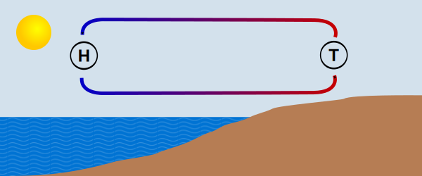
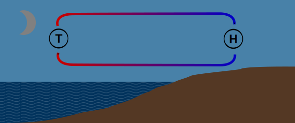

Wetterkunde
Seewind
Weht tagsüber vom Wasser auf das Land (auflandig).
Landwind
Weht nachts vom Land auf den See (ablandig)
Der Föhn

Wenn nördlich der Alpen ein Hochdruckgebiet und südlich ein Tiefdruckgebiet liegen, strömen gewaltige Luftmassen von Norditalien über die Alpen hinweg nach Norden. Beim aufsteigen der Luft wird sie abgekühlt und die vom Mittelmeer kommende Feuchtigkeit kondensiert und wird auf der Südseite der Alpen abgeregnet. Beim Absinken der Luftmassen wird die nun trockene Luft wieder aufgewärmt. Da sich trockene Luft allerdings schneller erwärmt als sich die feuchte Luft abgekühlt hat, kommt sie viel Wärmer an, als sie einmal auf gleicher Höhe in Italien war. Durch die geringe Luftfeuchtigkeit hat man bei Föhnlage eine klare und sehr weite Sicht, bei der die Alpen viel näher und größer erscheinen als sonst. Allerdings ist Vorsicht geboten: Der schlagartig aus dem Rheintal hereinbrechende Föhnsturm kann sehr gefährlich sein. Somit sollte man aufmerksam das Wasser Richtung Osten beobachten um im Notfall rechtzeitig reagieren zu können .
Gewitter
Wärmegewitter
Enstehen bei einer länger anhaltender Hochdrucklage und bringen starke thermische Winde mit sich. Wenn sich das Land stark erwärmt transportieren die Seewinde große Mengen an Feuchtigkeit in obere Luftschichten wo sie schließlich kondensieren und Gewitterwolken (Cumulonimbus) bilden. Diese Art von Gewitter sind meistens auf eine bestimmte Region beschränkt, können aber böige und starke Winde hervorbringen. Sie entsehen hauptsächlich im östlichen, südlichen oder westlichen Teil des Sees. Die besondere Gefahr besteht darin, dass der Wind kurz vor dem Ausbruch des Gewitters abflaut und anschließend um 180° dreht.
Frontengewitter
Entstehen innerhalb einer Kaltfront eines großräumigen Tiefs. Die Anzeichen dieser Gewitterart sind fallender Luftdruck und sich imposant auftürmende Wolken. Da am Bodensee die Westwindlage vorherrscht ziehen sie meist aus südwestlicher bis nordwestlicher Richtung auf. Die meist in weniger als einer halben Stunde durchgezogenen Gewitter können sowohl Regen- und Hagelschauer als auch gefährliche Windböen mit Windgeschwindigkeiten von bis zu 75 km/h - 112 km/h mit sich bringen.
Der Sturmwarndienst
Rund um den Bodensee sind 43 Orangefarbene Blinkscheinwerfer postiert. Deren Anordnung soll sicherstellen, dass von jedem Punkt des Sees mindestens 1 zu sehen ist. Es gibt 3 unabhängig betriebene Warnbereiche (West, Mitte und Ost).
Betriebszeiten:
1.April bis 31.Oktober von 6:00h bis 22:00h
1.November bis 31.März von 7:00h bis 20:00h
Starkwindwarnung: 40/min
Spitzenböen zwischen 39 km/h - 61km/h
Notmaßnahmen: Segel reffen, Rettungsweste anlegen, nach Hafen oder Uferschutz umsehen
Sturmwarnung: 90/min
Spitzenböen mit mehr als 62 km/h
Notmaßnahmen: Hafen oder windgeschütztes Ufer aufsuchen